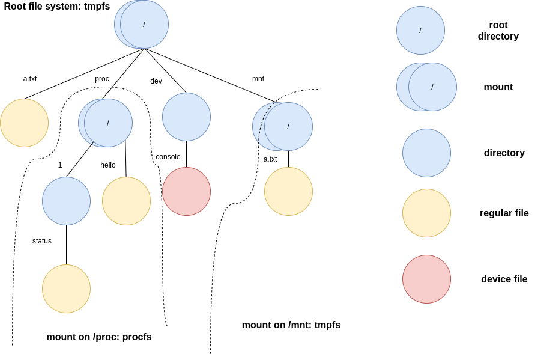

Lab 7 : Virtual File System¶
Introduction¶
A file system manages and places the data in storage mediums. Each file system has a specific way to store and retrieve the data. Hence, a virtual file system(VFS) is common in general-purpose OS to provide a unified interface for all file systems.
In this lab, you’ll implement a memory-based file system(tmpfs) to get familiar with the concept of VFS. In the next lab, you’ll implement a FAT32 file system to access files from an SD card. It’s recommended to do both together.
Goals of this lab¶
Understand how to set up a root file system.
Understand how to create, open, and close files.
Understand how to read and write files.
Understand how to mount a file system and look up a file across file systems.
Understand how to design VFS for multitasking.
Understand how to design procfs.
Understand how initramfs works.
Background¶
Tree structure¶
A file system is usually hierarchical, and a tree is a suitable data structure to represent it.
Each node represents an entity such as a file or directory in the file system.
Each edge has its name, and it’s stored by one directory.
There is one path between two nodes. Concatenating all the edges’ name on the path generates a pathname.
A VFS can parse the pathname to traverse from one node to another.
Example graph
Terminology¶
file system¶
In this documentation, a file system refers to a concrete file system type such as tmpfs, FAT32, etc. Virtual file system will be shortened as VFS.
vnode¶
We call a node in a VFS tree vnode.
For VFS, a vnode is an abstract class. The underlying file system should implement the vnode to change the behavior.
component name¶
A pathname delimits each name by ‘/’. The name is called component name.
Required¶
In the required part, you need to implement tmpfs to understand how VFS works. We provide an example VFS code for you. It’s up to you to re-design the VFS yourself or modify the provided code.
The following configuration is specified in the required part to simplify the implementation.
Each file’s size is less than 512 byte.
Only one root directory and regular files under it.
Pathname lookup includes only one component name.
struct vnode {
struct mount* mount;
struct vnode_operations* v_ops;
struct file_operations* f_ops;
void* internal;
};
struct file {
struct vnode* vnode;
size_t f_pos; // The next read/write position of this file descriptor
struct file_operations* f_ops;
int flags;
};
struct mount {
struct vnode* root;
struct filesystem* fs;
};
struct filesystem {
const char* name;
int (*setup_mount)(struct filesystem* fs, struct mount* mount);
};
struct file_operations {
int (*write) (struct file* file, const void* buf, size_t len);
int (*read) (struct file* file, void* buf, size_t len);
};
struct vnode_operations {
int (*lookup)(struct vnode* dir_node, struct vnode** target, const char* component_name);
int (*create)(struct vnode* dir_node, struct vnode** target, const char* component_name);
};
struct mount* rootfs;
int register_filesystem(struct filesystem* fs) {
// register the file system to the kernel.
// you can also initialize memory pool of the file system here.
}
struct file* vfs_open(const char* pathname, int flags) {
// 1. Lookup pathname from the root vnode.
// 2. Create a new file descriptor for this vnode if found.
// 3. Create a new file if O_CREAT is specified in flags.
}
int vfs_close(struct file* file) {
// 1. release the file descriptor
}
int vfs_write(struct file* file, const void* buf, size_t len) {
// 1. write len byte from buf to the opened file.
// 2. return written size or error code if an error occurs.
}
int vfs_read(struct file* file, void* buf, size_t len) {
// 1. read min(len, readable file data size) byte to buf from the opened file.
// 2. return read size or error code if an error occurs.
}
Requirement 1¶
In this requirement, you need to set up tmpfs as the root file system. The following steps are just recommended if you use the provided code. If you devise the VFS yourself, you don’t have to follow them.
File system registration¶
Each file system should register itself and pass its basic information to the VFS. Then, users can specify the name of the file system to create a new mount. Also, some global resources, such as object memory pools, can be created in registration.
Create a root file system¶
Create a mount object¶
The root file system is at the top of the VFS tree.
The provided code uses struct mount to represent a mounted file system, so as the root file system.
You should create a struct mount object and let rootfs point to it.
Root directory’s vnode¶
Each mounted file system has its root directory. You can create the root directory’s vnode during the mount setup.
However, the internal representation of each file system’s directory may be different. A VFS should call the underlying file system specific method to construct the root directory’s vnode.
Hint
You can use vnode -> internal to point to the internal representation of a vnode.
Directory entry¶
A directory holds edges information of a VFS tree. Each edges information is stored by one directory entry.
You should design the directory entry of your tmpfs’s root directory. Later on, the VFS should be able to create or find a regular file from directory entries.
required 1 Set up tmpfs as the root file system.
Requirement 2¶
In this requirement, you need to implement the following functions for tmpfs.
Lookup a regular file in the root directory.
Create a regular file in the root directory.
Open a regular file.
Close a regular file.
vfs_open¶
Regular files, directories, and device files are vnodes in the VFS tree.
vfs_open is the API to open them regardless of the underlying file system and file type.
Furthermore, a regular file can be created by it.
Component name lookup¶
A file system iterates through directory entries and compares the component name to find the target file. Then, it passes the file’s vnode to the VFS if it finds the file.
question 1 Is it possible that a file exists in a file system, but there is no vnode object of it?
Create a file¶
If a file is not found in a file system, an error code should return to the VFS.
Then, the VFS should check if O_CREAT is set in int flags.
If yes, it should ask the file system to create a new regular file and pass the created regular file’s vnode to the VFS.
Open a file¶
A file in a file system can be opened by more than one user at the same time. If a VFS successfully find a file in a pathname lookup, the VFS should create a file descriptor for the file.
required 2-1 implement struct file* vfs_open(const char *pathname, int flags)
vfs_close¶
Closing a file descriptor means a user no longer access the file by the file descriptor. The VFS should release the file descriptor back to the memory pool.
required 2-2 implement int vfs_close(struct file* file)
Test cases¶
struct file* a = vfs_open("hello", 0);
assert(a == NULL);
a = vfs_open("hello", O_CREAT);
assert(a != NULL);
vfs_close(a);
struct file* b = vfs_open("hello", 0);
assert(b != NULL);
vfs_close(b);
Requirement 3¶
In this requirement, you need to implement the following functions for tmpfs.
Write a regular file.
Read a regular file.
vfs_write¶
Given the file descriptor, a VFS calls the corresponding write method to write a file.
tmpfs’s write starts from f_pos. The content is stored in memory. After the write finishes, tmpfs update f_pos and the size of the regular file.
required 3-1 Implement int vfs_write(struct file* file, const void* buf, size_t len)
vfs_read¶
Given the file descriptor, a VFS calls the corresponding read method to read a file.
tmpfs’s read starts from f_pos. After the read finishes, tmpfs update f_pos.
Note that f_pos should not exceed the file size. Once a file read reaches the end of file(EOF), it should stop there, and return the number of bytes read.
required 3-2 Implement int vfs_read(struct file* file, void* buf, size_t len)
question 2 Is EOF pass to the reader by a special character in the reader’s buffer?
Test cases¶
struct file* a = vfs_open("hello", O_CREAT);
struct file* b = vfs_open("world", O_CREAT);
vfs_write(a, "Hello ", 6);
vfs_write(b, "World!", 6);
vfs_close(a);
vfs_close(b);
b = vfs_open("hello", 0);
a = vfs_open("world", 0);
int sz;
sz = vfs_read(b, buf, 100);
sz += vfs_read(a, buf + sz, 100);
buf[sz] = '\0';
printf("%s\n", buf); // should be Hello World!
Elective¶
Read directories¶
A common UNIX command ‘ls’ list all files under the directory. It can be implemented by retrieving directory entries information from a given directory.
A VFS should devise a universal directory entry format for all file systems. When a user passes a buffer and a maximum read size to a VFS, the VFS should ask the underlying file system should follow the format to fill out the buffer.
Test cases¶
// create some regular files at root directory
struct file* root = vfs_open("/", 0);
// your read directory function
// iterate all directory entries and print each file's name.
elective 1 Implement an API for users to get the directory entries information from a directory.
VFS in a multitasking scenario¶
So far, we only consider how VFS works in a single thread environment. In a multitasking scenario, the address space is usually isolated between user tasks to a VFS. A user and a VFS can’t communicate with each other by simply pass the file descriptor object. Also, a user task should not be able to access another task’s file descriptor.
Now, you need to implement a VFS in a multitasking scenario.
Note
You need to extend the result from lab5.
Task’s VFS information¶
Each task may open different files and the current working directory may also be different.
You need to keep that information in the struct task such that a VFS can serve each task differently.
question 3 Should each task owns its current working directory and the root directory?
File descriptor table¶
A VFS can’t directly pass a file descriptor object to a user task. The following conditions are required in a multitasking scenario to make a file accessible by a user task.
For each opened file, a VFS should pass a token to the user task. The user task accesses the file by the token.
A VFS should be able to identify the token belongs to which task.
A user task should not be able to fake a token to read another task’s opened file.
The easiest implementation to meet the requirements is a file descriptor table.
Each task has a file descriptor table in its struct task.
Each table entry stores a file descriptor.
The token return to the user task is the index of a file descriptor in the file descriptor table.
Then, VFS can easily identify the token belongs to which file descriptor by
Get the file descriptor table from the current task.
Get the file descriptor by looking up the index token.
Also, a user task can’t fake a token to access another task’s file descriptor because a token is its file descriptor table’s index.
elective 2-1 Implement file descriptor table for tasks.
System calls¶
You need to implement wrappers for the original vfs_open, vfs_read, etc. as a system calls to let user tasks access the VFS. The original file descriptor should be replaced with the file descriptor number.
elective 2-2 Implement VFS system calls.
Test cases¶
int a = open("hello", O_CREAT);
int b = open("world", O_CREAT);
write(a, "Hello ", 6);
write(b, "World!", 6);
close(a);
close(b);
b = open("hello", 0);
a = open("world", 0);
int sz;
sz = read(b, buf, 100);
sz += read(a, buf + sz, 100);
buf[sz] = '\0';
printf("%s\n", buf); // should be Hello World!
VFS with multiple layers¶
In the required part, the VFS contains only one directory and files under it. Now, your VFS should be able to
Create subdirectories.
Change the current working directory.
Mount file systems on directories.
Look up an entire pathname.
mkdir¶
Creating a directory is almost the same as creating a regular file. A VFS should find the parent directory of a newly created directory first. If the parent directory is found, call the file system’s mkdir method with the component name to create a new directory.
elective 3-1 Implement a VFS interface and a tmpfs method for int mkdir(const char* pathname).
chdir¶
With the layers of a VFS tree increased, it’s inefficient to specify a pathname starting from the root vnode. Hence besides the root vnode, a VFS should also keep the current working directory vnode. Then, a user can specify a pathname that the lookup starts at the current working directory vnode to shorten the lookup time.
You need to implement an API for changing the current working directory given the pathname.
elective 3-2 Implement int chdir(const char* pathname)
mount¶
A file system can mount on a directory.
You should implement the following API to mount a file system.
- int mount(const char* device, const char* mountpoint, const char* filesystem)
A VFS calls the file system’s method to mount on the mountpoint directory.
filesystem specify the file system’s name.
A VFS should find and call the file system’s method to set up the mount.
device specify a name
For a device-based file system, the name should be a pathname of a device file that stores a file system.
For a memory-based file system, the name can be used as a name for the mounted file system.
mountpoint specify directory’s pathname to be mounted on.
You should implement the following API to unmount a file system.
- int umount(const char* mountpoint)
A VFS tear down the mounted file system on the mountpoint directory.
mountpoint specify the directory’s pathname with a file system mounted on.
elective 3-3 Implement VFS interfaces and tmpfs methods for int mount(const char* device, const char* mountpoint, const char* filesystem) and int umount(const char* mountpoint).
Note
You don’t need to implement mounting and unmounting the root directory.
Pathname lookup¶
As mentioned in the background section, a pathname lookup is simply traversing the vnode. A VFS can use the following step to find the target file.
Start from one vnode.
Get the next component name.
Get the next vnode by the next component name.
Go to the next vnode.
Repeat 2-4; a VFS can reach the target file’s vnode if the file exists.
Absolute vs. relative pathname¶
A pathname starts with ‘/’ is an absolute pathname. The lookup starts at the root directory vnode.
Otherwise, it’s a relative pathname. The lookup starts at the current working directory vnode.
Component name lookup¶
Each component name is delimited by ‘/’. The VFS looks up the component name in a directory vnode.
The last component name¶
The last component name is special because a new regular file or directory may be created by the last component name.
Dot component name¶
“.” and “..” are special component names.
“.” refers to the current directory.
“..” refers to the parent directory.
Cross the mountpoint¶
A pathname lookup crosses a mountpoint in the following case.
The current directory is the root of a file system, and the next component name is “..”.
The next component name is a mountpoint.
In the first case, if the current directory is also the root of the VFS, the VFS can just stay at the root directory vnode. Otherwise, the file system is mounted on another file system’s mountpoint. The VFS should go to the parent directory vnode of the mountpoint.
In the second case, the VFS should go to the mounted file system’s root directory vnode instead of the mountpoint’s vnode.
elective 3-4 Implement pathname lookup.
Test cases¶
char buf[8];
mkdir("mnt");
int fd = open("/mnt/a.txt", O_CREAT);
write(fd, "Hi", 2);
close(fd);
chdir("mnt");
fd = open("./a.txt", 0);
assert(fd >= 0);
read(fd, buf, 2);
assert(strncmp(buf, "Hi", 2) == 0);
chdir("..");
mount("tmpfs", "mnt", "tmpfs");
fd = open("mnt/a.txt", 0);
assert(fd < 0);
umount("/mnt");
fd = open("/mnt/a.txt", 0);
assert(fd >= 0);
read(fd, buf, 2);
assert(strncmp(buf, "Hi", 2) == 0);
procfs¶
Some kernel’s internal states can be exposed to users. It enables a user to get or change the kernel’s internal states.
One way for a user to access one specific kernel resource is an ad-hoc system call. However, it’s inconvenient for a user to write different codes to access different resources.
Another solution is a general interface for all accessible internal states. A kernel can abstract its internal states as files and exposed them by a VFS.
procfs is a file system in UNIX-like OS to expose processes and system state. You need to implement it to enable a user task to access a kernel’s internal states.
Read and write internal state¶
In procfs, a kernel’s internal state is retrieved/modified by reading/writing the corresponding file. Here, you can play with the concept by creating switch and hello files.
Reading hello always gets the string “hello”.
The content of switch can change the letter case of hello.
Writing “0” to switch, the content of hello becomes “hello”.
Writing “1” to switch, the content of hello becomes “HELLO”.
elective 4-1 The procfs creates switch and hello file in its root directory. Users can access them by open, read, and write.
Get tasks’ internal states¶
For accessing task-related states, procfs can create task directories named by task id and then create regular files under it as in elective 4-1.
However, it’s not a good solution to create every task-related states in the beginning because the state and even the existence of that task always update.
A better implementation is, the creation and deletion of a task directory are defered until someone access task-related information in procfs.
Then, procfs will
Get the information from the task subsystem.
Create/delete task id directory in procfs.
Create/update task status file under the task id directory.
elective 4-2 The procfs lazily updates the task-related directory and file. Users can read task’s status by reading <task id>/status
Note
The procfs should still follow the VFS interface, but the lookup/read/write methods could be specialized for different objects.
Test cases¶
char buf[16];
mkdir("proc");
mount("procfs", "proc", "procfs");
int fd = open("/proc/switch", 0);
write(fd, "0", 1);
close(fd);
fd = open("/proc/hello", 0);
int sz = read(fd, buf, 16);
buf[sz] = '\0';
printf("%s\n", buf); // should be hello
close(fd);
fd = open("/proc/switch", 0);
write(fd, "1", 1);
close(fd);
fd = open("/proc/hello", 0);
sz = read(fd, buf, 16);
buf[sz] = '\0';
printf("%s\n", buf); //should be HELLO
close(fd);
fd = open("/proc/1/status", 0); // choose a created task's id here
sz = read(fd, buf, 16);
buf[sz] = '\0';
printf("%s\n", buf); // status of the task.
close(fd);
fd = open("/proc/999/status", 0); // choose a non-existed task's id here
assert(fd < 0);
initramfs¶
Initial ramdisk is a file system image file. A kernel can populate its root file system with an initial ramdisk during the booting process. Then, it can execute the executable file inside the file system and initialize the system in user mode.
An initial ramdisk can be implemented as an archive file. It’ll be loaded into memory before the kernel startup. After the VFS and the root file system are ready, the kernel parses the archive and populates the root file system by it.
cpio archive¶
cpio is a simple archive format. Each file will be recorded as a header followed by the pathname and the file data. The header record every information used in UNIX VFS. In this lab, you only need to focus on
c_mode: to identify regular file and directory
c_filesize: the size of the file data.
c_namesize: the size of the file’s pathname.
It’s recommended to use the new ascii format to create the cpio archive file. You can use the following command to create it.
cd <target_directory>
find . | cpio -o -H newc > initramfs.cpio
The first record will be the “.” directory.
cpio also creates the last record with the pathname “TRAILER!!!” to indicate it’s the end of the archive file.
You can omit these two records.
Then, mkdir and open(pathname, O_CREAT) to create each file and directory.
Hint
The format of cpio header can be looked up by man 5 cpio.
Note
The cpio archive pads 0 to make both the size of the header + pathname and the size of file data to be multiple of 4.
Load initial ramdisk¶
There are two ways to load an initial ramdisk. The first one is embedding it into a kernel as in Embed compiled binary to kernel. The second one is letting a bootloader load it to a particular memory address.
It’s recommended to use the second one because you may get a huge kernel image for embedding a large ramdisk into it. Then, the UART bootloader would take a long time to load it. With the second method, a ramdisk can be put into an SD card with a kernel image. The rpi3’s bootloader can load it for you.
QEMU¶
QEMU also provides a way to load an initial ramdisk.
You can add the argument -initrd <cpio archive> to QEMU and QEMU will load the cpio archive file to 0x8000000.
rpi3¶
You can put the cpio archive to the boot partition of the SD card.
And create a config.txt file under the same directory with the following content.
The rpi3 bootloader will put the archive file to the target address.
config.txt
ramfsfile=<cpio archive>
ramfsaddr=<loaded physical address>
elective 5 Implement initramfs to populate the root file system.